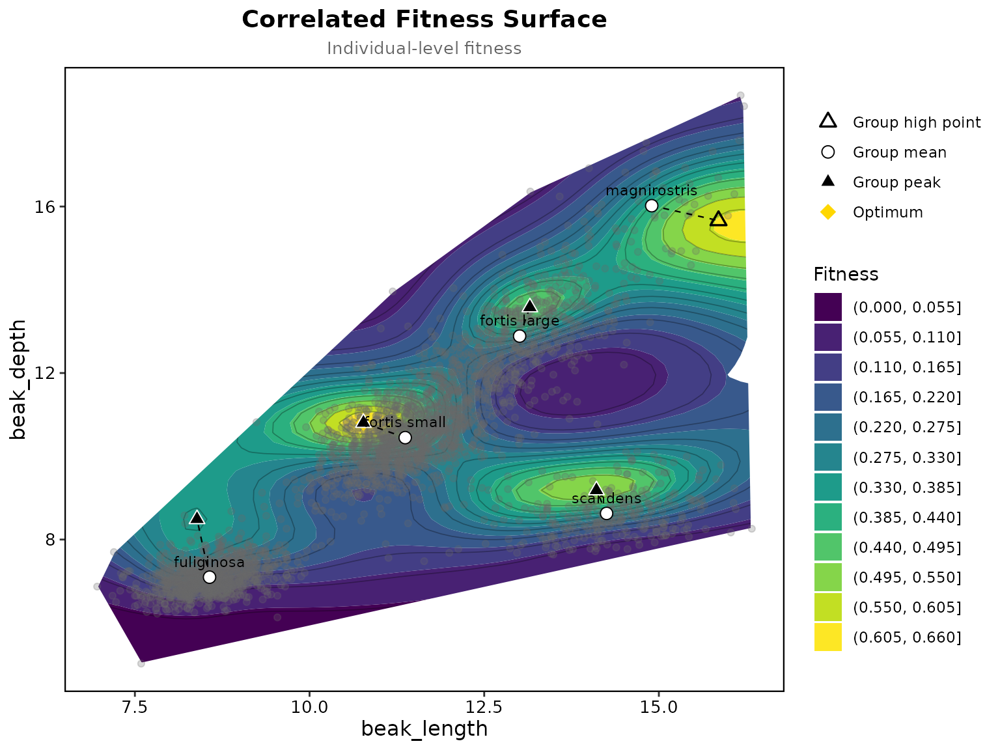

Beausoleil et al. (2023) fitted one fitness surface to 3428 ground
finches at El Garrapatero on Santa Cruz: four species, with Geospiza
fortis split into its small and large beak morphs, five groups in
all. Fitness was the number of later years a bird was seen again, traits
were beak length and depth in millimetres. The package has the data as
finch_community, built from their archive (doi:10.5683/SP3/0YIWSE).
##
## fortis large fortis small fuliginosa magnirostris scandens
## 586 1384 1096 53 309One pooled surface, the groups marked
The traits stay in millimetres, the fitness type is detected as a count so the surface takes a Poisson family, cells farther than 0.15 of the axis range from any bird are blanked as in the paper, and the group is used only to mark each group’s mean and the highest point of the surface within its own range.
surface <- correlated_fitness_surface(finches, "recaptures", c("beak_length", "beak_depth"),
k = 27, too_far = 0.15,
group = "species", group_effect = FALSE)
plot_correlated_fitness(surface, c("beak_length", "beak_depth"), show_points = TRUE, point_alpha = 0.25)
surface$groups## group n mean_beak_length mean_beak_depth peak_beak_length
## 1 fortis large 586 13.007307 12.886966 13.153729
## 2 fortis small 1384 11.369052 10.448229 10.771525
## 3 fuliginosa 1096 8.568677 7.095934 8.389322
## 4 magnirostris 53 14.897689 16.019465 15.853559
## 5 scandens 309 14.251929 8.627551 14.106610
## peak_beak_depth peak_fit peak_interior peak_edge
## 1 13.580169 0.4984825 TRUE FALSE
## 2 10.803898 0.6535953 TRUE FALSE
## 3 8.490339 0.3524929 TRUE FALSE
## 4 15.662373 0.6095700 FALSE FALSE
## 5 9.184407 0.5441535 TRUE FALSEEach group’s mean lies within about a millimetre of the highest fitted recapture rate in its range, 0.90 mm on average, which is the figure Beausoleil et al. report. The flags say whether that high point is a peak: four groups sit by a peak of their own, and for magnirostris the surface keeps rising past its 53 birds towards the edge of the data. Every maximum of the surface is listed in the result.
surface$peaks## beak_length beak_depth fit interior
## 1 10.771525 10.803898 0.6535953 TRUE
## 2 16.171186 15.662373 0.6230330 FALSE
## 3 14.106610 9.184407 0.5441535 TRUE
## 4 13.153729 13.580169 0.4984825 TRUE
## 5 8.389322 8.490339 0.3524929 TRUEThe same surface on standardised traits
The usual route in the package standardises the traits first. The peaks come back in millimetres by undoing the scaling.
prep <- prepare_selection_data(finches, "recaptures", c("beak_length", "beak_depth"))
surface_z <- correlated_fitness_surface(prep, "recaptures", c("beak_length", "beak_depth"),
k = 27, too_far = 0.15, group = "species", group_effect = FALSE)
g <- surface_z$groups
sds <- sapply(finches[, c("beak_length", "beak_depth")], sd)
mus <- colMeans(finches[, c("beak_length", "beak_depth")])
g$peak_length_mm <- g$peak_beak_length * sds[1] + mus[1]
g$peak_depth_mm <- g$peak_beak_depth * sds[2] + mus[2]
g[, c("group", "n", "peak_length_mm", "peak_depth_mm")]## group n peak_length_mm peak_depth_mm
## 1 fortis large 586 13.153729 13.580169
## 2 fortis small 1384 10.771525 10.803898
## 3 fuliginosa 1096 8.389322 8.490339
## 4 magnirostris 53 15.853559 15.662373
## 5 scandens 309 14.265424 9.415763